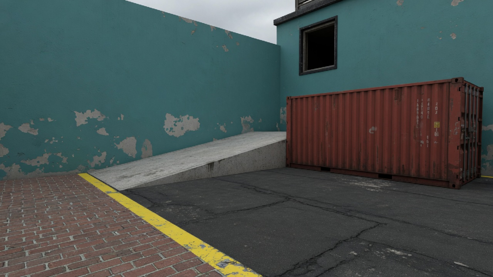
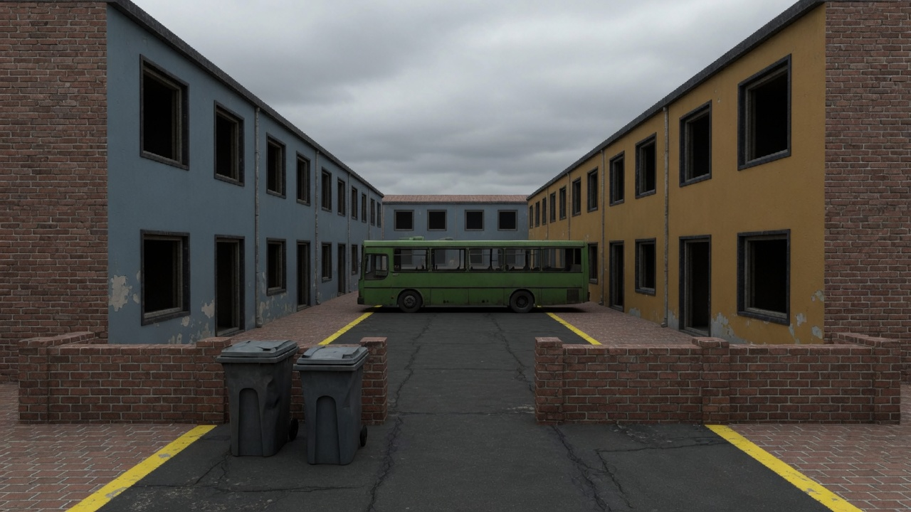
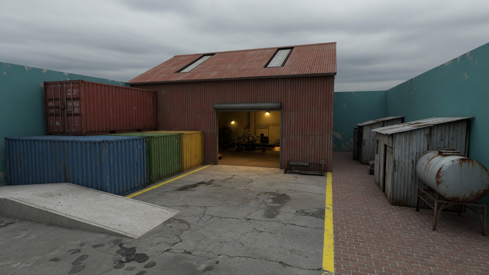
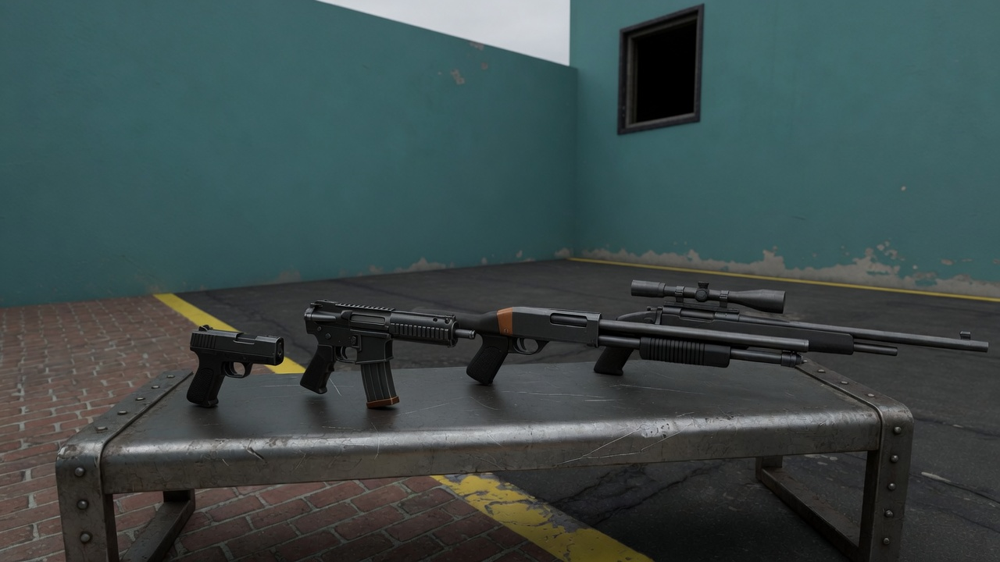
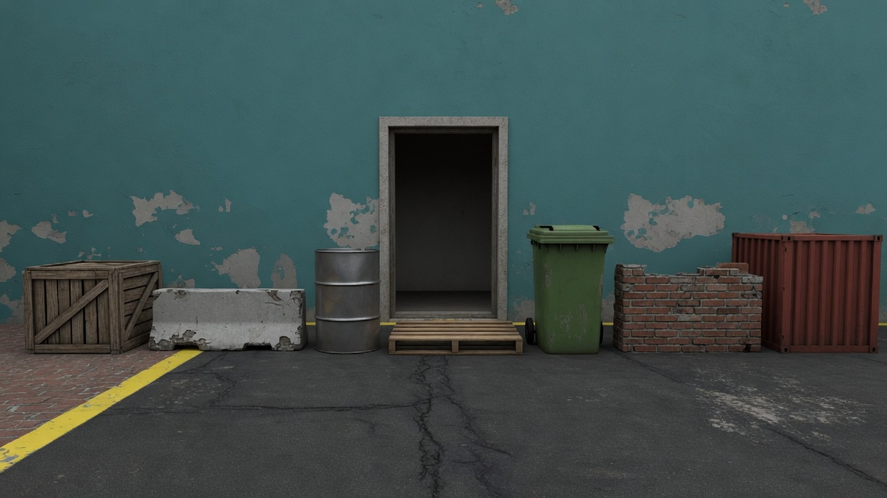
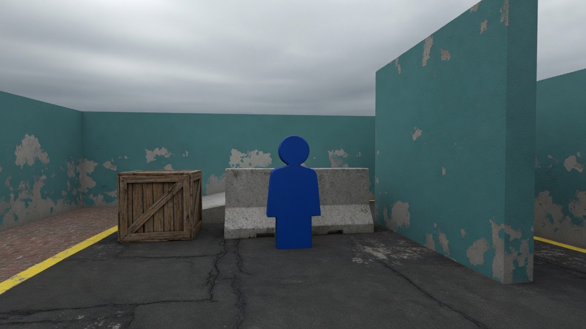

Art direction · 0.2.20 · objecten, maps, wapens
Blijf bij het gevecht.
Een snelle cartoony arena op mensenmaat. Het beeld maakt een gevecht leesbaar. Het begint geen tweede spel.
Vijf tegen vijf, of iedereen voor zich. Bewegen is vlot, schieten is hitscan, een lichaam gaat in ongeveer een halve seconde neer. Trickshots geven punten, geen extra schade. Er zijn drie plekken: Townhouses, Foundry en Rooftops. De geweren zijn pistool, revolver, geweer, SMG, shotgun en sniper, plus een frag, een werpmes en een kolfslag.
Maten hieronder komen uit de code. Een model volgt die maten. De maten volgen het model niet. Decimaal met een punt, in meters, zoals in Godot.
Stijl
De stijl is cartoony. Vlakke kleur, harde randen, vormen die je op 20 m nog uit elkaar houdt. Cel-shading mag. Een donkere rand mag als die het silhouet duidelijker maakt. Materiaal blijft eenvoudig: één albedo uit de swatch, ruwheid in de band, slijtage in grote vlakken.
De verhoudingen blijven menselijk. De pion is een capsule van 1.80 m, en een mesh blijft daarbinnen. Enorme handen en speelgoedverhoudingen horen er niet in. Fotorealisme ook niet: geen poreuze huid, geen fotografische modder, geen filter waar de pion in verdwijnt.
Moodboard
Zes platen, één licht. Ze leggen materiaal, slijtage en maat vast. Ze zijn geen plattegrond: de layouts blijven scenes/maps/townhouses.tscn, scenes/maps/foundry.tscn en scenes/maps/rooftops.tscn.
Drie dingen op de platen volg je niet. Gele strepen liggen daar soms als wegmarkering; geel hoort alleen op de rand van een ramp, een railing of de kop van een machine. De containers mogen niet feller dan de swatches hieronder. Op de wapenplaat raken de lopen elkaar; elk wapen wordt apart geleverd.






Kleur
De swatches zijn de albedo’s uit de maps en de speler, als hex van de Godot-kleur. De wereld blijft in het midden: ruwweg tussen #33363B en #8C5C38. Verzadigd blauw, oranje, rood en goud zijn bezet.
Alleen de speler
De pion is een capsule met deze kleur over de hele romp, plus een beetje emission. Een toekomstige mesh blijft binnen de capsule en houdt een groot vlak in de teamkleur. Een armband is te klein op 20 m. Geen operators, geen rugzakken met een verhaal, geen tweede silhouette per team.
Townhouses
Het stofblauw en het oker van de huizen zijn de dove neven van de teamkleuren. Ze zitten aan de rijen, niet als accent midden in een gevecht. Zet er geen pion-blauw tegenaan.
Foundry
Rooftops
Het blauw en het oranje van de spawn-wanden zijn de dove neven van de teamkleuren, alleen op die wand. De surf is koeler dan het beton, zodat de ramp leesbaar is. Geel blijft op de rand.
Wapen en effect
Emission is voor de monding, de frag, de tracer en de pion. Niet voor neon, lampenbakken of lichtgevende randen. Glow op de wereld staat uit.
Maat
De pion is de maatstaf. Capsule radius 0.40 m. Staan: 1.80 m hoog, oog op 1.60, hoofd-hit op 1.52 met radius 0.41. Hurken: 1.00 m hoog, oog op 0.88. Sprong: 7.6 m/s bij zwaartekracht 22, dus 1.31 m omhoog. Lopen 7.6, sprint 11.4, hurken 3.5. In de lucht blijft de sprintsnelheid behouden. Air-strafe gaat tot 13.5 m/s. Een helling steiler dan 45° is surf: je glijdt langs het vlak. Een kicker rond 40° is nog vloer. Melee reikt 2 m.
Blauw is de pion: staan 1.80 m, hurken 1.00 m. Bruin is dekking. De streep op 1.31 m is de sprong: die haalt de krat, en haalt de auto niet. Het oog zit op 1.60 m staand en op 0.88 m gehurkt. De balk stopt bij de entresol van 3.00 m. De daken zitten daarboven: Rooftops op 6.00 m, het loodsdak van Foundry op 7.30 m.
| Hoogte | Wat de speler doet | Bestaat al als |
|---|---|---|
| onder 0.45 | Verbergt niets. Blijft onder 0.05 als het geen collision heeft. | pallet, stoeprand |
| 1.10 | Hurken is weg. Staan schiet erover. Springen lukt. | krat, 1.5 × 1.1 × 1.3 |
| 1.40 | Lijf weg, hoofd gluurt. Springen lukt net niet. | auto, 4.8 × 1.4 × 2.0 |
| 1.90 | Volle dekking. Niet overheen kijken, niet op springen. | truck bij spawn, 1.9 hoog |
| 2.40–2.60 | Breekt een lane. Alleen bovenop via een ramp. | bus 2.40; container 2.60 |
| 3.00 | Entresol. Minstens twee wegen omhoog. | verdieping, mezzanine |
| 4.00 | Tussendek. Een loopramp gaat verder naar het dak. | flankdek Rooftops |
| 6.00–7.30 | Dak. Via ramp of trap, nooit als enige route. | Rooftops 6.00; loodsdak Foundry 7.30 |
| 10.00 | Hoog dak. Twee loopwegen, en de surf begint hier. | loodsdak Kade |
Nieuwe dekking kiest een rij uit deze tabel. Een hoogte van 1.25 of 1.67 maakt een tussenvorm die niemand kan lezen. Daken op 6.00 m, 7.30 m en 10.00 m horen erbij, met een loopweg ernaartoe. Een verdieping boven dat dak maakt een andere game. De surfwand van Kade stijgt langs de buitenmuur boven het dak van 10 m; dat vlak is te steil om op te staan.
Deur, vrije doorgang: minstens 1.20 m breed en 2.20 m hoog voor één pion, 2.20 m breed als twee mensen elkaar moeten passeren. De grote deur van de loods is 5 m breed en 4.5 m hoog. Ramen zijn gaten. De capsule blijft haken aan een spleet van 0.90 m.
Maps
Vier plekken, dezelfde wereld. Townhouses is een straat van ongeveer 56 × 82 m. Foundry is een werf van ongeveer 52 × 69 m. Rooftops is een hof van ongeveer 58 × 82 m. Kade is een dok van ongeveer 90 × 120 m. De buitenmuren van Rooftops zijn 9.6 m. Die van Kade zijn 16.5 m, boven de surfrichel.
- Townhouses: twee rijen huizen, bovenverdieping, voortuinen, flanken, een bus dwars op het midden. Twee surframps van ongeveer 60°, 48 m lang, langs de west- en oostmuur, met een kicker van 40° aan beide uiteinden. Bots lopen de straat. Surfen doen ze niet.
- Foundry: loods met een mezzanine op 3 m en een loopdak op 7.3 m. Loopramps net ten westen van de grote deuren. De deuren blijven open. Een brug over de lichtstraat. Twee surframps langs de westmuur, gesplitst door de container. Containers in het westen, steeg en schuren in het oosten, laadplaatsen achter beide spawns. Bots nemen de loopramp als er iemand op het dak staat.
- Rooftops: twee daken op 6 m rond een court. Surfs langs de flanken landen op een dek van 4 m, daarna een loopramp naar het dak. Een korte surf over de court. Een drop door een gat in de rand. Trappen binnen, en die blokkeren de zijdeuren niet. De begane grond is één kamer met vier deuren. Lange flanken met kratten. Bots nemen trap en flank, niet de surf. Team Deathmatch en Free For All, in het menu of met --map rooftops.
- Kade: dokvloer op 0 m, kade op 4 m, loodsdak op 10 m. Een surf langs elke buitenmuur, van het dak naar de kade, door het midden van de map. Een kortere surf op de kademuur, het dok in. Een vlakke surf dwars door het dok. Aan het oostdak een balkon naar een kwartcirkel met straal 14 m, van 10 m naar 4 m. De bocht is een reeks korte rechte stukken en draait het dok in, naar het midden. Dezelfde hoek aan de oranje kant draait ook het dok in. Een stalen loopplank aan de noordoosthoek van elke loods klimt van de kade naar het dak, ongeveer 24°, zodat je de bocht weer kunt pakken. Trap in de loods en een smalle straatramp die op het dak aansluit, allebei met de voet op open vloer. Bots nemen die, niet de surf. In het menu of met --map quay.
- Blauw spawnt op +Z, oranje op −Z. In free-for-all kijk je naar het midden. De spawn-wand mag de dove teamkleur dragen. Verder de map in niet.
- Geen spawn ziet de andere spawn. De langste schone lane blijft onder de 35 m, want een longshot telt vanaf 38 m en een lane over de hele map geeft de sniper het bord.
- De meeste gevechten zitten op 10–30 m. Zet daar de dekking, niet op de spawn-lijn.
- Sprint is 11.4 m/s. Om de 8–15 m valt er een keuze: links, rechts, hurken, omhoog.
- Elke verdieping heeft twee wegen omhoog. Eén trap is een fuik. Naast elke surf is een loopweg. Een surf gooit je niet over de buitenmuur.
- De map is spiegelbaar noord-zuid. Een asymmetrie mag, als beide kanten dezelfde soorten gevechten hebben: een shotgun-hoek, een geweer-straat, een sniper-kier.
- Bots lopen dezelfde collision als spelers. Een shortcut alleen voor de speler bestaat niet.
- Niets beweegt. Geen deur die dichtgaat, geen lift, geen rijdende bus. Bewegen is al het spel.
Kade is die vierde plek: een dok, zelfde verf en hetzelfde licht. Het dak daar is 10 m, hoger dan de andere daken, omdat de surf van hoog naar laag moet. Een volgende plek blijft in deze wereld: schoolplein, parkeerterrein. Geen nieuw klimaat en geen nieuw decennium.
Objecten
Eerst de taak, dan de hoogte, dan het mesh. Het blockout gaat de map in en wordt gespeeld voordat het mooi wordt.
| Taak | Collision | Voorbeelden |
|---|---|---|
| Dekking | De zichtbare massa, op een hoogte uit de tabel. | krat 1.10, auto 1.40, truck 1.90, container 2.60 |
| Herkenningspunt | Groot, één per plek, leesbaar vanaf 40 m. | bus 9.2 × 2.4 × 3.2 dwars in de straat; tank ø 4.4, 5 m hoog; pers in de loods |
| Aankleding | Geen. Blijft onder 0.05 m, of plat op een muur die al dicht is. | plas, kabel, papier, schroef, naad in beton |
| Wegwijzer | De rand van iets dat al een taak heeft. | gele streep op een ramp of railing, dove teamkleur op de spawn-wand |
Gedeelde set
Deze mogen op beide maps, in de swatches van die map. Krat 1.10. Betonband 1.10 of 1.40. Pallet, vlak. Vat, alleen als de hoogte klopt met een rij uit de tabel: een staand vat is ongeveer 0.90 en dus geen geldige dekking tenzij je hem op 1.10 brengt of hem aankleding maakt zonder collision. Straatlantaarn en pijp tegen een muur.
Per plek
- Townhouses: bakstenen gevel, kozijn zonder glas, stoep, groene bus, kliko, lage tuinmuur, bank, fiets plat tegen de muur. Heg is een massief blok dekking, geen doorzichtig blad. Twee lange surframps langs de buitenmuren. Geel alleen op de kicker of de rand.
- Foundry: container 2.4 × 2.6 × 6.1, stapel tot 5.2 met een ramp, krat, pers, band, schuur van 3.4 hoog, watertank, truck. Golfplaat alleen op de loods, niet op de huizen. Loopramps naar het dak van 7.3 m, een brug over de lichtstraat, surframps op de westmuur.
- Rooftops: bakstenen blok, betonnen dakrand van 1.15 m, airco op het dak, kratten op de flank, een surf over de court. Het dek zit op 4 m, het dak op 6 m. Ramen zijn gaten, zonder glas.
- Kade: bakstenen loods, betonnen kade, surf in het koelere grijs, gele rand alleen op de kicker. Bus in de straat, container van 2.60 in het dok, kratten van 1.10 op de flank en de kade. De kwartcirkel is een holle hoek, straal 14 m aan de teen, opgebouwd uit korte rechte stukken, en wijst naar het midden van het dok.
Een object dat in beide werelden kan staan zonder uitleg is goed. Een object dat een derde wereld nodig heeft, gaat eruit.
Eerlijke vorm
- Wat er massief uitziet, houdt de pion en de kogel tegen. Een vensterbank die uitsteekt en de capsule vangt, is dekking, ook als je hem als sfeer bedoelde.
- Detail kleiner dan ongeveer 8 cm verandert het silhouet op 20 m niet. Zet het niet op een hoek waar iemand achter denkt te hurken.
- Herhaling is gewenst. Tien unieke kratten zijn tien dingen om te leren. Eén krat, drie keer, is een taal.
Wapens
Zeven silhouetten. Zes geweren, plus het werpmes. Op de killfeed staan ze al zo, en een nieuw mesh houdt die lezing.
| Id | Hoe het voelt | Wat het mesh laat zien |
|---|---|---|
| pistol | Semi, 6/s, 34 schade, 18 schots, herladen 1.15 s. Het makkelijke zijwapen. | Kort, geen kolf. Ongeveer 0.20 m in het bestand. Het spel toont hem op 0.30 m. |
| revolver | Semi, 2.2/s, 55 schade, hoofd 110, 6 schots, herladen 2.8 s. Naast het pistool, geen vervanging. Missen kost een lange herlaad. | Kort, zichtbare cilinder, geen kolf. Weergave 0.30 m. Ook vanaf de heup herkenbaar. |
| rifle | Auto, 10/s, 24 schade, 30 schots, herladen 1.55 s. Het standaard geweer. Vijf kogels op het lichaam dichtbij. | Carbine, recht magazijn, middellange loop. Weergave 0.42 m. Magazijn is het warmste vlak. |
| smg | Auto, 20/s, 12 schade, hoofd 18, 35 schots, herladen 1.7 s. Vol tot 15 m, ×0.4 vanaf 30 m. 8% sneller lopen dan met het geweer. Snelle ADS. | Korter en gedrongener dan het geweer, recht magazijn. Weergave 0.40 m. |
| shotgun | Pomp, 1.55/s, 8 pellets, 6 schots, herladen 2.1 s. Dichtbij zwaar, voorbij 20 m bijna weg. | Dik, twee buizen, korte loop. Weergave 0.50 m. Accent op de pomp. Geen trommelmagazijn. |
| sniper | Grendel, 1.15/s, 50 schade, hoofd is dood, 10 schots, herladen 1.75 s. Enige geweer met een scope. Richtvizier gaat naar beeldhoek 38 en verbergt het model. | De langste, één kijker. Weergave 0.58 m. Ook vanaf de heup herkenbaar, want noscope bestaat. |
| knife | Werpmes, toets F. Projectiel op 30 m/s, één treffer is dood, blijft 2 s in de muur steken. Vliegt door teamgenoten heen. Geen hitscan. | Kort lemmet, klein gevest. Weergave 0.25 m. Geen geweer dat toevallig dun is. |
De frag is een olijfgroene bol met een lepel, geen geweer. Het granaatslot telt drie werpbare dingen, frags en werpmessen door elkaar. G gooit de frag, F het mes. Melee op E is een slag met het wapen dat je vasthebt: 2 m, 50 schade, eens per 0.8 s. Dat is geen mes.
Een class draagt één primair (geweer, SMG, shotgun of sniper), één secundair (pistool of revolver) en die drie werpbare dingen. Er passen acht classes in het menu. Standaard zijn Rifleman, Breacher, Sniper en Runner. Runner is SMG, revolver, één frag en twee messen.
Silhouettest
Zet het mesh vlak zwart en bekijk het op de breedte van een duim. Een ander noemt in één seconde pistool, revolver, geweer, SMG, shotgun, sniper of werpmes. “Een gun” is een fail. Haal je de kijker van de sniper, dan blijft het de lange. Dek je het magazijn van het geweer af, dan blijft het smaller dan de shotgun. De SMG blijft korter dan het geweer. De revolver houdt zijn cilinder. Het mes blijft een lemmet.
Materiaal van het wapen
Donker staal #242629, metaal 0.35 tot 0.60, ruw 0.35 tot 0.50. Greep in mat polymeer, metaal 0. Eén accent #D16B29, klein, op magazijn, cilinder of pomp. Geen camouflage, geen teamkleur, geen goud, geen sticker, geen merknaam, geen serienummer dat een echt merk napraat. De schoten in de credits komen van bestaande opnames; het model blijft een generiek geweer uit die familie.
Het vizier zit rechtsonder. Het midden van het beeld, beeldhoek 90, blijft leeg. De loop is het verste punt aan de voorkant: daar zet het spel de mondingsvlam, op de bounding box. Een bajonet of een losse stang wordt dus de vlam. Laat dat weg.
Licht
Eén zon werpt schaduw. Verder is het bewolkt daglicht. Schaduw is zacht en kort. Een hurkende pion in een deuropening blijft leesbaar. Mist, nacht en regen die spelers verbergen horen er niet in. SSAO staat uit, glow staat uit, tonemap staat op filmisch.
| Townhouses | Foundry | Rooftops | |
|---|---|---|---|
| Lucht | #21262E | #302B2B | #292E33 |
| Zon | #FFF5E6 · energie 1.15 | #FFE0BD · energie 1.1 | #FFF2E0 · energie 1.12 |
| Ambient | #858F9E · 0.58 | #998A80 · 0.70 | #8C949E · 0.62 |
| Lampen | geen | warm #FFD19E onder het dak, koel #BFDBFF in de schuur, zonder schaduw | warm #FFDBB3 binnen en op de dekken, koel #C7DBFF op de court, zonder schaduw |
Een nieuwe lamp is vulling, geen tweede zon. Geen gekleurde rim, geen tl-zee, geen lichtgevend bord.
Aanleveren
Eerst één blad
Voordat er een mesh is, is er een blad met: naam, taak, map, hoogte × breedte × diepte, welke plaat het volgt, en wat een speler kan (hurken, erover schieten, erop springen, alleen kijken). Geen referentie uit een andere game erbij. Daarna een blockout op die hoogte, in de map, gespeeld. Daarna pas het mesh, binnen die collision.
Bestand
- GLB, Y omhoog, meters. Objecten: oorsprong op het contact met de grond. Wapens: oorsprong bij de greep, loop langs +X, monding naar +X. Het mes: lemmet langs +X. Het spel draait het model 90° en schaalt de lange as naar 0.25 (mes), 0.30 (pistool, revolver), 0.40 (SMG), 0.42 (geweer), 0.50 (shotgun) of 0.58 m (sniper). Echte verhoudingen in het bestand; de schaal op het scherm doet de code.
- Naam: wpn_pistol.glb, wpn_revolver.glb, wpn_rifle.glb, wpn_smg.glb, wpn_shotgun.glb, wpn_sniper.glb, wpn_knife.glb. Die vervangen assets/weapons/<id>.glb. Objecten: prop_shared_crate_110.glb, prop_town_bus.glb, prop_foundry_container_260.glb. Het getal is de collision-hoogte in centimeters.
- Eén materialenset. Albedo, ruwheid, en een normal alleen als die het silhouet op 10 m verandert. Prop 1024, viewmodel 2048. Geen 4K. De albedo blijft in de swatch, ook als de bron een foto was.
- Geen camera, geen licht, geen vloer, geen handen in het bestand. De bounding box is het wapen zelf.
- Viewmodel werpt geen schaduw. Wereldobjecten wel, van de zon.
- Tris, als leesbaarheidsgrens: muurmodule tot 1500, prop tot 2500, herkenningspunt tot 6000, viewmodel tot 15000. Meer driehoeken maken het silhouet niet duidelijker.
Ruwheid van de wereld blijft 0.75 tot 0.95, behalve de tank rond 0.50 en het staal rond 0.60. Metaal is 0 op verf, baksteen, hout en beton. Natte plekken blijven boven 0.40. Geen spiegelvloer.
Updates
Van 0.2.10 tot 0.3.0. Release 0.2.12 bestaat niet: het nummer springt van 0.2.11 naar 0.2.13, gelijk aan NET_VERSION. Wat hier staat, hoort in het beeld en in de map.
| Versie | Wat erbij kwam |
|---|---|
| 0.2.10 | Namen van vijanden alleen als je ze ziet. Teamgenoten blijven door muren leesbaar. Labels van doden zijn weg. Het pistool is semi, maximaal 6/s, schade 34. Bots mikken op het lijf, ook gehurkt. De chat staat linksonder. Na 4.5 s zonder schade komt HP terug met 12/s. Nieuwe schoten, voetstappen, hit en granaatknal. |
| 0.2.11 | Final killcam aan het eind van de ronde, door de ogen van de killer, ongeveer 5.5 s. Overlay FINAL KILLCAM, killer naar slachtoffer, HEADSHOT als het een headshot was. Iedereen staat stil: geen lopen, schieten, granaten of schade. Geen kill in de ronde, dan geen cam. Daarna het scorebord, zoals altijd. |
| 0.2.13 | Classes, tot 8, opgeslagen op de eigen machine. Standaard Rifleman (geweer, pistool, 2 frags), Breacher (shotgun, pistool, 3 frags) en Sniper (sniper, pistool, 1 frag). Kiezen bij de eerste spawn, wisselen via Esc gaat in bij de volgende spawn. Melee op E: 2 m, 50 schade, eens per 0.8 s, een vuist in de killfeed. Kogelinslagen ongeveer 2 s, met een stofwolkje. De shotgun klinkt luider. Teamradar 4 s: het hele team ziet de vijanden. Op een dedicated server volgt de score het echte team. |
| 0.2.14 | Foundry, zoals hierboven bij maps, toen nog zonder het dak van 7.3 m. Free For All: eerste naar 20 kills, of de beste na 10 minuten, bots vullen aan tot 10. In FFA laat de radar alleen jou de anderen zien. Map en mode in Singleplayer en bij Host, en --map / --mode op de server. Muisgevoeligheid 0.1–4.0, aim standaard 0.45. Een rode wig wijst waar schade vandaan kwam en vervaagt na ongeveer 1.3 s. |
| 0.2.15 | De achtergrondmatch achter het hoofdmenu bevriest het volgende spel niet meer. Singleplayer, Host en Join ruimen die match op, ook midden in een killcam. |
| 0.2.16 | Het versienummer staat rechtsboven in het hoofdmenu. Zelfde netwerkversie als 0.2.14 en 0.2.15. |
| 0.2.17 | Trickshots zijn alleen stijlpunten. De server beslist. NOSCOPE 100, 360 NOSCOPE 250, AIRSHOT 75, LONGSHOT vanaf 38 m is 50, POINT BLANK (shotgun) 100, DOUBLE 150, SPRAY TRANSFER 150, HEADSHOT STREAK 200, SURF KILL 150, DROP KILL vanaf 3.5 m val is 100. Combo +0.25× binnen 8 s, tot 2×. Popup voor de schutter, gouden tag in de killfeed, kolom STYLE, Style King, en de beste trickshot in de killcam in plaats van de laatste kill. Granaten geven geen tricks. Air-strafe tot 13.5 m/s. Sprint blijft in de sprong. Een helling steiler dan 45° is surf. Townhouses krijgt twee surframps van ongeveer 60°, 48 m, west en oost, met kickers van 40°. Bots surfen niet. |
| 0.2.18 | SMG, revolver en werpmes, met de maten uit de wapentabel. Nieuwe tricks: RUN & GUN 125, HOSE 150, QUICKDRAW 150, SIX SHOOTER 200, YEET 250, YEET ×2 500. Het granaatslot mixt tot drie frags en messen. Class Runner: SMG, revolver, 1 frag en 2 messen. Bots gebruiken SMG en revolver. Messen gooien ze niet. |
| 0.2.19 | Rooftops. Twee daken op 6 m, flanksurfs naar een dek van 4 m en dan een loopramp, een korte surf over de court, een drop door de rand, trappen die de zijdeuren vrij laten, één kamer met vier deuren, lange flanken met kratten. TDM en FFA. Bots nemen trap en flank. |
| 0.2.20 | Foundry krijgt de loopramps naar het loodsdak op 7.3 m, de brug over de lichtstraat, en de twee surframps op de westmuur. De grote deuren blijven open. Bots lopen de ramp op als er iemand op het dak staat. De collision is anders dan in 0.2.19, dus server en clients zijn allebei 0.2.20. |
| 0.3.0 | Kade. Ongeveer 90 × 120 m, dok op 0 m, kade op 4 m, loodsdak op 10 m. Surfs van het dak naar de kade en van de kade het dok in, door het midden, plus een vlakke oversteek. Een holle kwartcirkel met straal 14 m, van 10 m naar 4 m, aan beide kanten het dok in, met een recht aanloop- en uitloopstuk. Een stalen loopplank van de kade naar het dak aan de noordoosthoek, ongeveer 24°, zodat je de bocht weer pakt. Trap en een smalle straatramp die op het dak aansluit, voor de bots, met de voet vrij van de muur. De collision is nieuw, dus server en clients zijn allebei 0.3.0. Geen ARM-build meer: alleen Windows en Linux x86_64. |
Buiten de kern
Dit breekt een regel hierboven. Het hoort er niet in, ook niet als detail op een verder goed mesh.
- Sciencefiction, energiegeweer, hologram, mech. Het arsenaal is zes mechanische geweren, een frag en een werpmes.
- Fantasy, zombies, schedels als motief. De plekken zijn in gebruik, niet vervloekt.
- Operators, capes, harnassen, skins, gouden guns, neon, anime-stickers. Eén pion, één model per geweer.
- Een echt merk, een eenheidspatch, een ghillie, een arsenaal van veertig geweren. Het model blijft generiek.
- Fotorealisme, fotografische modder, bloed over elke muur, of een bruin-grijze filter waar de pion in verdwijnt.
- Enorme handen en speelgoedverhoudingen. De pion blijft 1.80 m.
- Een open wereld, een doolhof, een auto waar je in rijdt, een interieur waar je zoekraakt. Een dak mag. Een verdieping boven dat dak niet.
- Nacht, dikke mist, regen die de vijand verstopt.
- Pion-blauw, pion-oranje, vijand-rood of trickshot-goud als groot vlak in de speelruimte.
- Glas waar je niet doorheen schiet, of een heg waar je doorheen kijkt en toch achter blijft haken.
Afvinken
Alles aan, of het gaat niet de map in.
Getallen uit scripts/player.gd, project.godot, data/weapons/, scripts/weapon.gd (fit_model), scenes/maps/townhouses.tscn, tools/gen_foundry.py, tools/gen_rooftops.py, tools/gen_quay.py, assets/ui/icon_*.svg. Versie 0.3.0. Wijzigt de code, dan wijzigt deze pagina mee.